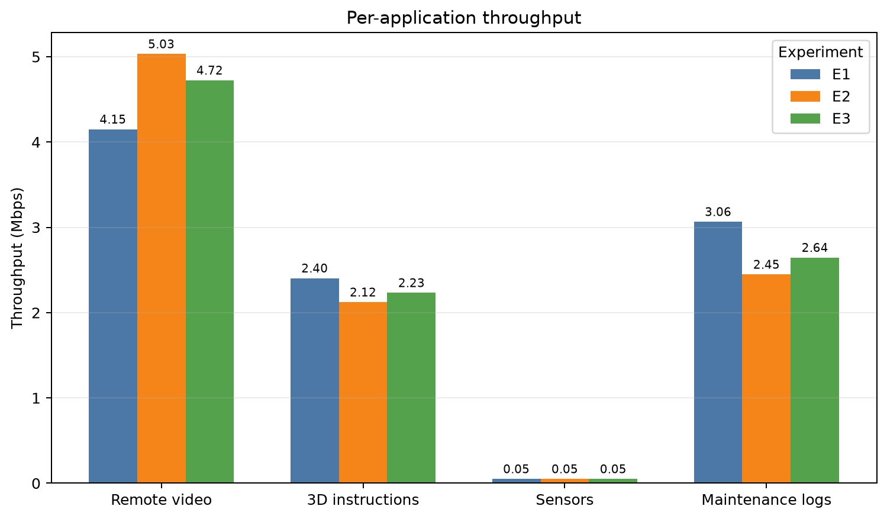
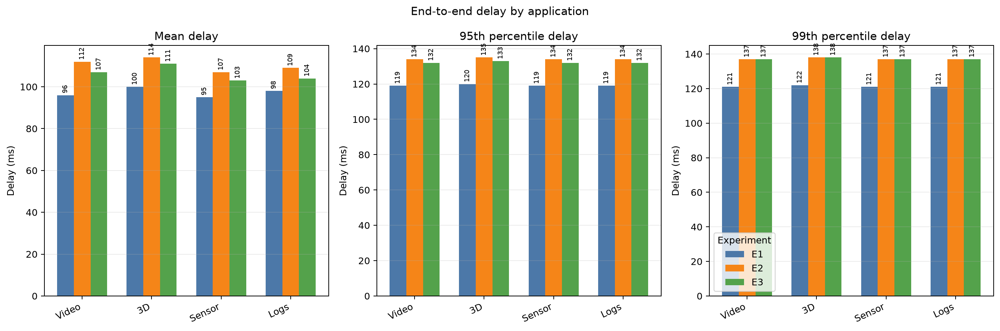
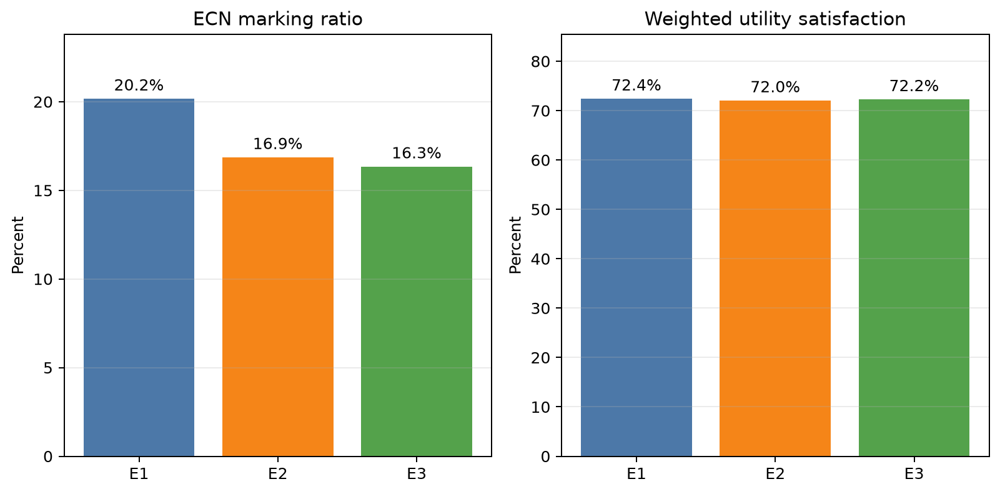
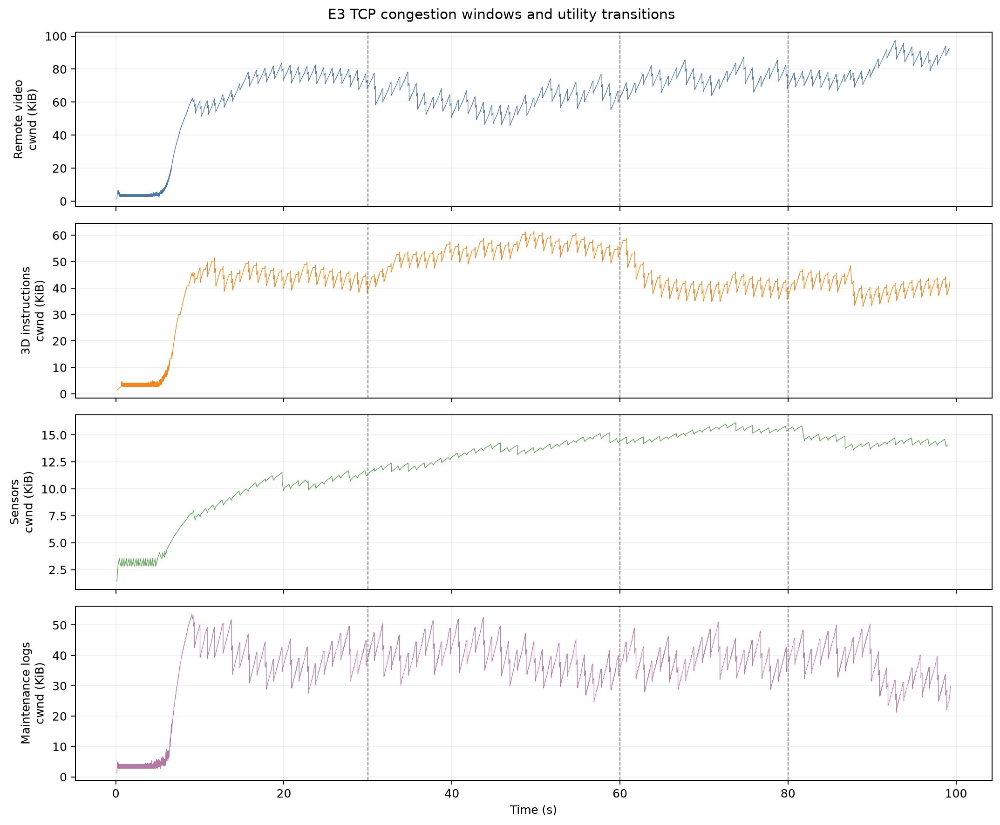

User guide
Overview
This repository is an ns-3 source checkout with project additions for modeling industrial augmented-reality traffic over an L4S and Classic dual-queue (DualPI2) bottleneck. It contains the simulation scenario, a utility-weighted variant of TcpDctcp, and reusable analysis and plotting utilities.
TcpDctcp, used as an ECN-capable proxy. TCP Prague and Accurate ECN are not part of this checkout, so results should be described as DCTCP-based proxy results.Requirements
- Linux or another platform supported by this ns-3 checkout
- A C++ compiler and Python 3
- The build dependencies listed in
doc/build.txt - For plots: Python with
matplotlib(andpandas/numpyif your plot scripts need them)
Configure & build
The project uses the Waf build system bundled with ns-3. From the repository root:
git clone https://github.com/Akhilkalisetti/L4S_applicaton_centirc-Documentation_portal.git
cd industrial-ar-l4s-dual-queue-bottleneck-scenario
./waf configure --enable-examples
./waf buildRun the scenarios
Each experiment is a 100-second run of the industrial-ar-dualq program. Write outputs to a local directory; generated outputs are ignored by Git.
mkdir -p results
./waf --run "industrial-ar-dualq --experiment=E1 --output=results/e1 --pcap=0"
./waf --run "industrial-ar-dualq --experiment=E2 --output=results/e2 --pcap=0"
./waf --run "industrial-ar-dualq --experiment=E3 --output=results/e3 --pcap=0"Command-line options
| Option | Default | Description |
|---|---|---|
--experiment | E3 | Experiment mode: E1 equal, E2 fixed, E3 dynamic utilities |
--duration | 100 | Simulation duration in seconds |
--bottleneckRate | 10Mbps | Client–router bottleneck rate |
--bottleneckDelay | 10ms | Client–router bottleneck one-way delay |
--output | industrial-ar | Output prefix for FlowMonitor, CSV and pcap files |
--pcap | true | Write pcap traces (use 0 to disable) |
Fixed scenario settings: DualPI2 queue limit 100,000 B, L4S mark threshold 1 ms, LAN 1 Gbps / 10 µs, applications start at 0.1 s and stop one second before the end.
Experiment definitions
| Experiment | Controller setting | Meaning |
|---|---|---|
| E1 | Utility 1.0 for every flow, entire run | Equal-utility baseline (unmodified DCTCP) |
| E2 | Video 0.9, instructions 0.6, sensors 0.5, logs 0.2 | Fixed application priorities |
| E3 | Utilities change at 30, 60 and 80 s | Dynamic, activity-driven priorities |
E3 activity schedule
| Time | Activity | Video | 3D instr. | Sensors | Logs |
|---|---|---|---|---|---|
| 0–30 s | Remote assistance | 0.9 | 0.6 | 0.5 | 0.2 |
| 30–60 s | Component inspection | 0.4 | 0.9 | 0.6 | 0.2 |
| 60–80 s | Overheating detection | 0.6 | 0.5 | 0.9 | 0.2 |
| 80–100 s | Remote assistance | 0.9 | 0.6 | 0.5 | 0.2 |
Applications
| Flow | Offered load | Generator |
|---|---|---|
| video | 8 Mbps | OnOff, always on |
| instructions | 4 Mbps avg | OnOff, 8 Mbps for 0.5 s, off 0.5 s |
| sensors | 40.96 kbps | OnOff, 256 B packets, always on |
| logs | 3 Mbps | OnOff, always on |
Utility-weighted DCTCP
The change lives in src/internet/model/tcp-dctcp.cc. DCTCP keeps a running estimate α of the fraction of ECN-marked bytes. Before the window reduction, α is mapped through the flow's utility A (a "type-2" map):
double p = std::max (0.0, std::min (1.0, m_alpha));
double mappedMarkRatio = p / (m_utility + (1.0 - m_utility) * p);
uint32_t val = (int)((1 - mappedMarkRatio / 2.0) * tcb->m_cWnd);
tcb->m_cWnd = std::max (val, 2 * tcb->m_segmentSize);A = 1: p' = p, identical to standard DCTCP.A < 1: p' > p, so the flow cuts its window harder and yields bandwidth.- Default utility is set through the attribute
ns3::TcpDctcp::Utility; per-socket changes go throughTcpSocketBase::SetCongestionControlUtility(). Utility must be positive.
In the scenario, utilities are applied at 0.11 s (after sockets exist), and for E3 again at 30, 60 and 80 s.
Output files
For an output prefix such as results/e1, the program writes:
| File | Contents |
|---|---|
*.flowmon | FlowMonitor XML with delay and jitter histograms |
*.applications.csv | Per-application throughput, delay, jitter, loss, utility and satisfaction |
*.network.csv | ECN mark ratio, drops and weighted utility satisfaction |
*.cwnd.csv | Congestion-window transitions per flow |
*.queue.csv | Aggregate queue occupancy sampled every 10 ms |
*.sojourn.csv | Classic and L4S sojourn samples at dequeue |
*.log | Run log including utility changes |
Analysis & plotting
Combine the three runs
python3 src/traffic-control/examples/industrial-ar-analyze.py \
--e1 results/e1 --e2 results/e2 --e3 results/e3 \
--output results/comparison.csvOrganize and plot each experiment separately
python3 src/traffic-control/examples/industrial-ar-organize.py \
--results results/industrial-ar
for experiment in E1 E2 E3; do
python3 src/traffic-control/examples/industrial-ar-plot-single.py \
--results results/industrial-ar/$experiment --experiment $experiment
doneCross-experiment and E3-only plots
python3 src/traffic-control/examples/industrial-ar-plot.py --results results/industrial-ar
python3 src/traffic-control/examples/industrial-ar-plot-e3.py --results results/industrial-arEvery script supports --help for its full options.
Metric definitions
- Throughput: application bytes received at the sink over the run.
- Satisfaction:
min(throughput / offered load, 1). - Weighted utility satisfaction: each app's satisfaction weighted by its time-averaged E3 utility, divided by the sum of those utilities. The same weights evaluate E1, E2 and E3. Both
mean_control_utilityandmean_target_utilityare kept per app. - p95/p99 delay: histogram-bin estimates from FlowMonitor.
- ECN marking ratio: marked packets ÷ packets enqueued at the bottleneck queue.
- Queue p95: 95th percentile of 10 ms aggregate occupancy samples.
- Sojourn p99: 99th percentile of observed per-packet time in the L4S or Classic queue.
Results summary
The full walkthrough, interactive charts and all 35 figures are on the Results & Figures page. Headline numbers:
| Metric | E1 equal | E2 fixed | E3 dynamic |
|---|---|---|---|
| Throughput video / instr. / sensors / logs (Mbps) | 4.149 / 2.403 / 0.049 / 3.065 | 5.031 / 2.122 / 0.049 / 2.447 | 4.723 / 2.232 / 0.049 / 2.645 |
| Weighted utility satisfaction | 0.724 | 0.720 | 0.722 |
| p95 / p99 delay (ms) | 119–120 / 121–122 | 134–135 / 137–138 | 132–133 / 137–138 |
| ECN marking ratio | 20.16% | 16.85% | 16.33% |
| Queue p95 (B) · L4S sojourn p99 (ms) | 4,052 · 5 | 18,000 · 19 | 16,500 · 19 |
| Drops | 0 | 0 | 0 |




Limitations
- DCTCP proxy: no TCP Prague or Accurate ECN in this checkout. Results must not be presented as TCP Prague measurements.
- Single seed: each experiment ran once. The numbers describe those runs and carry no measure of variance or significance.
- One operating point: a single bottleneck rate, delay and load. Parameter sweeps are needed before generalizing.
- Histogram percentiles: FlowMonitor delay percentiles are bin-edge estimates.
Glossary
- L4S
- Low Latency, Low Loss, Scalable throughput: an IETF architecture (RFC 9330) in which scalable congestion controllers react to frequent ECN marks to keep queues very short.
- DualPI2
- A coupled dual-queue AQM (RFC 9332) with an L4S queue and a Classic queue. The two are coupled so that both kinds of traffic share capacity fairly.
- ECN / ECT(1) / CE
- Explicit Congestion Notification. Senders mark packets ECT(1) to request the L4S queue; the AQM sets CE (Congestion Experienced) instead of dropping.
- DCTCP
- Data Center TCP: cuts its window in proportion to the fraction of marked bytes (α). Used here as the L4S proxy.
- TCP Prague
- The reference L4S sender for the public internet. It is not available in this ns-3 checkout.
- Accurate ECN
- A TCP feedback extension that reports every CE mark rather than one per RTT. Not available in this checkout.
- Utility (A)
- Per-application importance weight in (0, 1] that this project uses to scale the congestion response.
- cwnd
- Congestion window: how many bytes a TCP sender may have in flight.
- Sojourn time
- Time a packet spends waiting in a queue, from enqueue to dequeue.
- Satisfaction
min(received / offered, 1)per application.- FlowMonitor
- ns-3 module that records per-flow packets, delay, jitter and loss.
FAQ & troubleshooting
./waf --run industrial-ar-dualq says the program is not found
Examples are off by default. Re-run ./waf configure --enable-examples, then ./waf build.
The run aborts with "experiment must be E1, E2, or E3"
The value is case-sensitive. Use --experiment=E1, not e1.
Output files are huge
pcap tracing is on by default. Pass --pcap=0 to keep only CSV and FlowMonitor outputs.
Plot scripts fail with ModuleNotFoundError: matplotlib
Install the plotting dependencies, for example python3 -m pip install matplotlib.
Why is the Classic queue empty in every plot?
All four flows use TcpDctcp with ECT(1), so the DualPI2 classifier puts them all in the L4S queue. Adding a Classic (e.g. Cubic) flow would exercise the coupling.
Can I change the bottleneck?
Yes: --bottleneckRate=20Mbps --bottleneckDelay=5ms. Remember that offered loads are fixed in the scenario, so the level of congestion will change.
Are these TCP Prague results?
No. They are DCTCP-based proxy results and must be described that way.
Repository layout
src/traffic-control/examples/
├── industrial-ar-dualq.cc # four-application DualPI2 scenario
├── industrial-ar-experiments.md # experiment definitions and commands
├── industrial-ar-analyze.py # merges per-run metrics into comparison.csv
├── industrial-ar-organize.py # arranges outputs into E1/E2/E3 folders
├── industrial-ar-plot.py # cross-experiment plots
├── industrial-ar-plot-single.py # per-experiment plots
└── industrial-ar-plot-e3.py # E3-only plots
src/internet/model/tcp-dctcp.{h,cc} # utility-weighted DCTCP response
docs/INSTALL.md # prerequisites, build, run
project-website/ # this documentation portal
├── index.html # overview, objectives, team, progress
├── results.html # all results and figures
└── documentation.html # this pageLicense
The ns-3 codebase is distributed under the GNU GPL version 2. See LICENSE in the repository. Check individual files and upstream ns-3 notices when redistributing modified components.